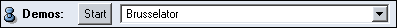
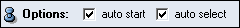
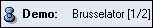
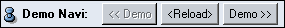
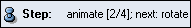
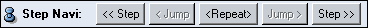
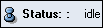

Ports
Demo file

Filename of a file describing a sequence of predefined demos. This port is provided for compatibility with older demos that do not use the Demo GUI. It is recommended to use the Demo GUI instead of using demo files.
Note: If DemoSequence is used with the Demo GUI, this port is empty and not used.
Demos

Options

- auto start:
- If DemoSequence is used with a
demo file, the first demo will
start automatically if this option is on.
- auto select:
- The DemoSequence will be selected
after executing a new demo or step if this toggle is on.
Demo

Demo Navi

Step

Step Navi

Steps one step of the current demo backward ($$<<$$ Step) or forward (Step $$>>$$) or executes the current step again ($$<$$Repeat$$>$$).
The Jump buttons allow stepping through single steps without executing them. They are activated if the current demo defines jump commands.
It is also possible to switch the demo steps by using the following function keys:
- Ctrl-F6:
- Go back to the previous step.
- Ctrl-F7:
- Execute the current step again.
- Ctrl-F8:
- Go to the next step.
Status:

Shows the status of the current demo.